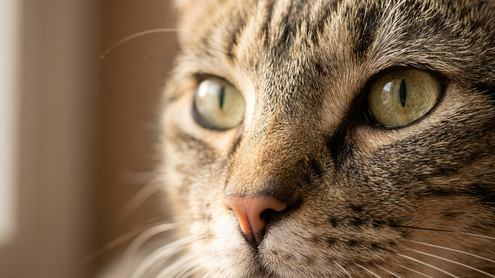

Кошка поела — и начинает водить лапой по полу вокруг миски, как будто пытается её закопать. Многие думают, что еда не понравилась. На самом деле за этим движением стоит инстинкт, которому тысячи лет. Но иногда то же самое поведение означает совсем другое. Разбираемся, как отличить норму от сигнала.
🐾 Первая помощь — всегда под рукой
AnimaLife подскажет, что делать в тревожной ситуации с питомцем ещё до визита к врачу. Откройте в один тап.
Дикие кошки — охотники-одиночки. После еды они «прячут» остатки добычи: закапывают или маскируют запах, чтобы не привлекать конкурентов и хищников. Этот инстинкт называется caching — кэширование добычи. Домашняя кошка сохранила его в полном объёме, даже если никогда не видела живую мышь.
Скрести пол вокруг миски — это попытка «закопать» остатки еды. Кошка делает движения, которые в дикой среде засыпали бы пищу землёй или листьями. То, что под лапой плитка или ламинат, мозг кошки не смущает: инстинкт сильнее логики.
Поведение абсолютно нормально, если:
Чаще «закапывают» кошки с высоким охотничьим инстинктом — бенгальские, абиссинские, ориентальные. Но поведение встречается у любой породы.
То же движение лапой может означать недовольство — и вот как это распознать:
Если поведение не мешает кошке нормально есть — ничего. Это не проблема, которую нужно исправлять. Некоторые хозяева подкладывают под миску небольшой коврик: кошка «закапывает» в него, и пол остаётся чистым.
Если кошка скребёт и плохо ест — проверьте три вещи по очереди: смените корм, переставьте миску в другое место, замените глубокую миску на плоскую тарелку. Обычно одно из этих изменений решает вопрос.
Если кошка резко изменила пищевое поведение — ест меньше, скребёт интенсивнее, выглядит вялой — это повод показаться ветеринару: иногда снижение аппетита связано не с едой, а с самочувствием.
🐾 Экономьте на лишних визитах к врачу
Сначала спросите AI-ветеринара в AnimaLife — часто этого достаточно, чтобы понять, нужен ли визит к врачу.
🐾 Понравился разбор?
Подпишитесь на канал — каждый день разбираем по одному тревожному симптому у кошек и собак: что в пределах нормы, а когда пора к врачу. Подпишитесь, чтобы не пропустить разбор, который может спасти здоровье вашего питомца.
Материал носит информационный характер и не заменяет очную консультацию ветеринара.